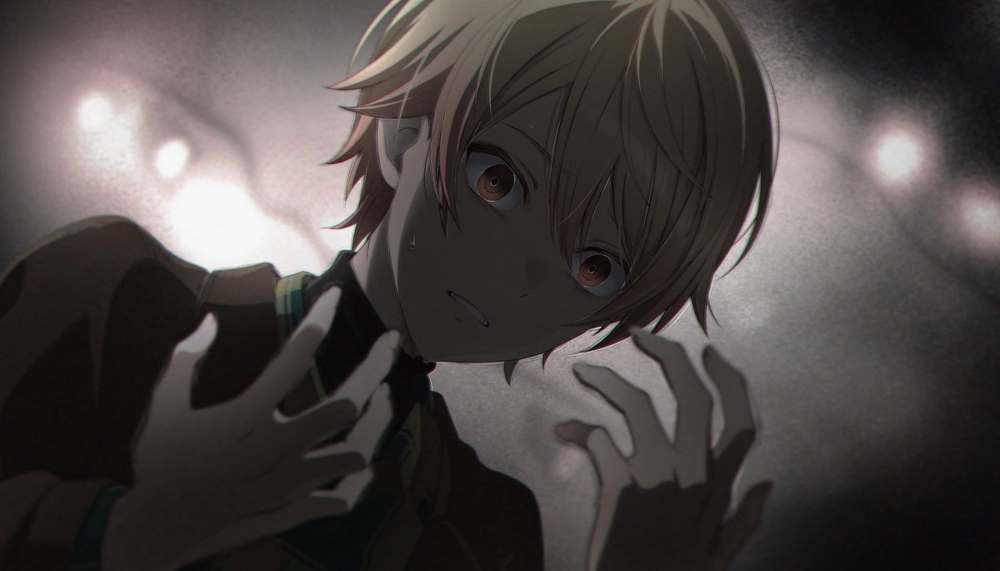

sigh.
why does everything gets only worse and worse?
it never becomes easier. maybe just for a day or two. its always goes down a slope, tougher and tougher.
is it all what it takes to ruin everything? just being yourself only for a bit?
thats painful. i know i cant rewind anything that i did. all said words are now settled in their mind forever. there is no turning back.
i just want to be loved. truly loved, without any foolish words or actions that arent made without any meaning. why is it always like that? i cant ever be sure that someone loves me truly and purely. my anxiety would never allow me to have this pure faith. it hurts.
its all fake. why is everything that i feel is lie when im receiving love? is it really love though? or is it depends on time, mood, weather, whatever else?
i feel so easily replaceable. of course, i cant even deny that there are always a nice replacement for me, just waiting for their time. am i the only one who doesnt have any replacements? what if i lose those few friends that i have right now? ill remain alone. whats after that? i dont know.
can i be unlovable to that point? i try my best to show my love, yet it always fails. i cant deny. im easily getting overwhelmed. i cant communicate for a long time without breaks. my social battery is just terrible.
expressing feelings is a hard thing for me as well. i was raised mostly alone. i didnt get in groups during entire school either. i had to always adapt so they would accept me in a group for at least one day.
of course i was forgotten right after we all went home.
does that all mean that i dont even deserve to be loved? if i cant express it like others expect, why should i even expect to get it? right? but i cant. i cant just get along with this.
i always look at couples. i always see how they are happy, doing silly things, or even just quietly sitting together. my heart aches each time. i wish i could feel same thing too.
i want to be near too. want to hold loved person closely. want to spend time together doing absolutely everything or nothing. love is everywhere. manga, anime, games, internet, blogs, socials, you cant just live without at least noticing it.
i always do. i always notice. and it hurts so much.
i...